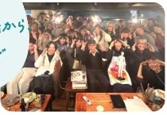
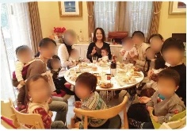
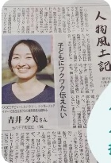
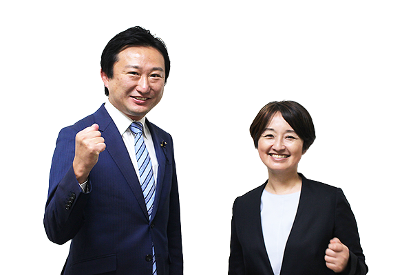

新しい風、一緒に起こしましょう！
-
東京都議会議員
滝田やすひこ 秘書 -
子どもの居場所づくり
学習支援
子ども政策連携室「子供の居場所で聴いた声」ヒアリングスタッフ -
社会福祉士養成課程 卒業
2027年春 資格取得予定 -
2019 松枝保育園父母の会 会長
2022 恩方第二小学校PTA -
玉川大学文学部 英米文学科卒／千葉市出身
八王子で結婚・出産し14年間経ちました
夫と中学生の息子と3人暮らし
青井 ゆみ
AOI YUMI 完全無所属これまで歩んできた道現場での経験が、今の私の原点です
一つひとつの出会いが、私の視点をつくってきました。
「声をつなぎ、カタチにする力」をこれからも大切にしていきます。
-
音楽・料理
2000年ポリスターレコードからメジャーデビュー（ドラム・ボーカル）。30代は料理人としてジョエル・ロブション等で働きました。

はちおうじ会議 第2回登壇。バンド時代の話から居場所運営までお話しました -
子育て
2012年結婚を機に八王子に移住・出産。子育ての中で「繋げていきたい社会」について考えるように。

子連れOKの料理教室を開催！ -
子どもの居場所
2021–2023年八王子市横山町 子どもの放課後居場所の事業責任者を3年。東京都福祉保健財団「子供が輝く東京・応援事業」採択団体。
3年で5,000人以上の子ども達が来場しました！ -
学習支援
2024–2026年生活困窮家庭自立支援事業に携わり、家庭の事情で生活に不安を抱える子と宿題や食事を共にし、愛着形成を支える活動。

タウンニュース八王子 第282号「人物風土記」に掲載されました -
子ども政策連携室
2023–2024年
アドボケイト子供政策連携室「子供の居場所で聴いた声」のヒアリングスタッフとして、都内50か所、児童館やプレーパーク、養護施設を回りました。また、その時の仲間の声掛けでアドボケイトの資格も取得。児童養護施設での意見表明、意見形成支援活動を約1年行いました。
活動をラジオで紹介しました -
社会福祉士取得へ
2024年–現在さらに広く社会の課題にまい進する為に、社会福祉士取得の道へ。2年間の学びの継続中です。高齢者、しょうがいの施設で240時間アセスメント等現場をしっかりと見てきました。
-
都議会議員秘書
2025年–現在地域課題に取り組む中、活動を通して知り合った滝田やすひこ都議会議員に声をかけて頂き秘書となりました。約1年半、八王子の現場の声を都政に繋ぐサポートをしています。
-
そして政治へ
現場で出会ったたくさんの声を行政につなぎ、八王子の未来のために全力で取り組みます。
八王子に新しい風、吹かせます！
この3つの政策を提案します。
-
福祉現場の声を政策に
福祉の現場で、「こうしたらもっと良くなる」という知恵やアイデアをたくさん聞きます。私自身が現場をまわる「福祉政策キャラバン」で、現場の工夫だけに任せず、こうした声を地道に制度や仕組みの改善につなげます。高齢・障がい・児童など、福祉を支える人も利用する人ももっと笑顔になれるよう、福祉の専門性を活かして現場と行政を橋渡しします。
-
子どもの声が届く八王子へ
内申点に左右されすぎない高校受験を都議と連携して提言します。また、別室登校や図書室・学校司書の充実など、学校の中にも多様な学びの場を広げます。学校や制度に子どもを合わせる教育ではなく、「学び方は一つじゃない！」をスローガンに一人ひとりに合った学び方をつくります。「遊び」を通して子どもが主体的に判断し、自己決定力や共感力、回復力を培う環境作りについて取組みます。
-
地域の力を、新しい価値へ
元八王子、恩方、浅川などでこれまで培ってきた地域の繋がりを活かし、新しいアイデアや八王子の資源を活かした取り組みが地域に根づいていくよう、まちをよく知る人や、応援する人・団体とつなぎ、挑戦を地域で育てる仕組みづくりに取り組みます。また、福祉事業所で見た「丁寧な手仕事」を強みと捉えて、新しい八王子土産をつくります。
こんにちは。元八王子町在住の青井ゆみと申します。
八王子市内で子どもの居場所の責任者や社会福祉の現場に関わる仕事や活動をしてきました。
十分な養育を受けられず2歳4歳で街をさまよい何度も保護されてきた兄弟や、家族の世話を背負うヤングケアラーなど、様々な状況にいる子ども達にも出会いました。
ご飯を手づかみで食べて友達と上手く関われなかった子が、私や周りのスタッフが関わり続ける中で、ある日箸を使い「ありがとう」と言えるようになった場面は、私の原点です。
育つ環境は選べません。でも出会う人や周りの人の支えによって人は変わっていける。どんな環境に生まれた子にも安心して大人になってほしい。
そして子ども達だけでなく、大人も高齢の方も障がいのある方も、一人ひとりの「こう生きたい」が尊重されて、困った時には必要な支えが届く。そんな八王子をつくっていきます。
現場で体験してきたものを行政に届け、仕組みから変えたい。
そんな想いを胸に、市政に取り組む決意をしました。

応援よろしく
お願いいたします!!